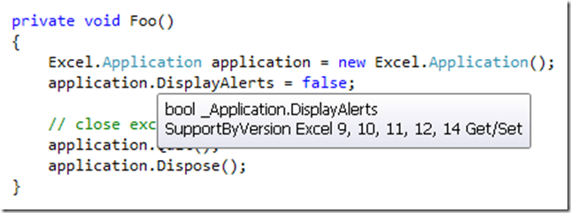

Why NetOffice?
The usual methods for accessing Microsoft Office. NET are the Primary Interop Assemblies and VSTO. Both access methods involve various disadvantages.
- They are limited to a version, i.e. they only work with one or certain versions of Office
- They cause problems while transferring or installation on other systems
- They offer no protection mechanism in the management of COM proxies
NetOffice eliminates these disadvantages and remains a 1:1 wrapper that is syntactically and semantically identical to the interop assemblies.
How does NetOffice work?
NetOffice used to access only LateBinding Calls via COM Interop, but without sacrificing the convenience and simplicity of EarlyBind calls. The slim architecture and efficient design makes this only slightly slower than so-called EarlyBind calls in .NET (max. 10%). Events in NetOffice are implemented with a technique the author calls Dynamic EarlyBinding. Learn more about this in the technical documentation.
NetOffice contains a number of assemblies. Why and which assemblies do I need for my desired Office application?
All Office applications use types which are defined in other components/type libraries. These dependent type libraries are therefore given as an independent assembly. Each assembly also requires the NetOffice.dll assembly. An overview which Office application integrates which additional assemblies can be found here.
Deployment Table:
| Office applications | Dependencies |
|---|---|
| ExcelApi.dll | |
| OfficeApi.dll | |
| VBIDEApi.dll | |
| NetOffice.dll | |
| WordApi.dll | |
| OfficeApi.dll | |
| VBIDEApi.dll | |
| NetOffice.dll | |
| OutlookApi.dll | |
| OfficeApi.dll | |
| VBIDEApi.dll | |
| NetOffice.dll | |
| PowerPointApi.dll | |
| OfficeApi.dll | |
| VBIDEApi.dll | |
| NetOffice.dll | |
| AccessApi.dll | |
| OfficeApi.dll | |
| DAOApi.dll | |
| VBIDEApi.dll | |
| ADODBApi.dll | |
| OWC10Api.dll | |
| MSDATASRCApi.dll | |
| MSComctlLibApi.dll | |
| NetOffice.dll | |
| MSProjectApi.dll | |
| OfficeApi.dll | |
| VBIDEApi.dll | |
| MSHTMLApi.dll | |
| NetOffice.dll | |
| VisioApi.dll | |
| OfficeApi.dll | |
| VBIDEApi.dll | |
| NetOffice.dll | |
| MSFormsApi.dll | |
| VisioApi.dll | |
| OfficeApi.dll | |
| VBIDEApi.dll | |
| NetOffice.dll |
What do I have to do to deliver my application with NetOffice?
Nothing except copying the needed assemblies to the target system. You don't need a registration or something like that with the exception of COMAddIns. Managed COMAddins generally have to be registered via the .Net Utility RegAsm.exe or the Windows Installer do that or you.
Do COMAddins also work version independent?
Yes, of course. This is a particular strength of NetOffice. See the code examples for example project for all Office applications but you have to create 2 Addins for 32/64 Bit support.
Is NetOffice ready for multiple platforms (32/64 Bit)?
You can use the NetOffice AnyCPU assemblies in all scenarios. his is true regardless wether you develop for a 32Bit Office application or a 64Bit Office application, even independent on which platform these are installed. If your assembly is a standalone application (.exe) or is being loaded by one, you can compile your assembly as AnyCPU without worries.
If your assembly is a COMAddin that is being loaded by a 32Bit Office application, you can still compile it as AnyCPU. If you develop a COMAddin that is being used by a 64Bit Office application, you have to compile your assembly as x64. If you wart to support 32Bit and 64Bit Office applications, you may need to provide a second x64-compiled COMAddin. This behaviour is the same in all scenarios(interop,vsto or netoffice). A 64Bit application can only load 64Bit Dll's.If you use a 64Bit Office for testing on your development system and you want to register your COMAddin while compiling (Register for COM Interop), you need to keep in mind that some older versions of Visual Studio call the 32Bit registration in that case. In this case, you get the following error:
"File <path to assembly> is not a valid assembly"
You can read a workarround by Microsoft here: Issues with building a project with "Register for COM interop" for a 64-bit assembly
How do I migrate my solution to NetOffice?
Interop Solutions
Change the references and the using(imports in vb) statements. Occasionally, you need to make some adjustments to event triggers. You have to replace all Marshall.ReleaseComObject calls with Dispose. you can also delete the most ReleaseComObject calls because NetOffice manages COM proxies for you. Read more about in the technical documentation: Understanding COM Proxy Management
VBA Solutions
Developers there want changing a VBA solution to VB.NET and NetOffice has to know that VB.NET is syntactical similar to VBA but has also some different concepts. If you have good VB.NET skills then you have no problems to migrate your solution to NetOffice.
COM proxy management
If you call Office applications (COM servers) .NET returns instead of real objects so-called COM proxies. In order to signal the COM server that you no longer need this, you have to free it with a special method. This applies to VSTO as well as to interop assemblies.
Due to this fact, you must not use no objects implicitly or use Enumerator directly because it then can no longer be released. In NetOffice each object provides the method Dispose() for when you do not need it anymore. All classes in NetOffice implement the IDisposable interface and also provide the Dispose() method. However, you do not have to call Dispose() for every used object and you may also use objects implicitly and Enumerator directly without having to worry about releasing ti afterwards. NetOffice generated proxies stored in a separate table and frees when you request it or a parent object is being released. More on that in the technical documentation and Tutorial01.
Unknown and Variant Types
Many office applications include Properties, return values or parameter whose type is not known at design time and which can change at run time, depending on context. There is a difference between unknown COM proxies and the variant data type which has its roots in the Visual Basic for Applications (VBA).
Unknown COM proxies in NetOffice have the type COMObject. Each class in NetOffice also inherits from this type. The declaration of unkown proxies is Object since NetOffice 1.5.1 as special service for VB developers to use the integrated late binding feature. You can also convert an anonymous COM proxy at run-time into the actual type without problems.
The variant data type is used in VBA for any type to accept both a COM proxy and a scalar data type such as bool or int. In NetOffice that type is replaced by the type object. If a Variant Property is a COM proxy at run time you get an object of the corresponding NetOffice wrapper class, otherwise the the corresponding scalar data type. More on that in the technical documentation and Tutorial06.
If NetOffice supports all versions of Office, how do I know which Office version offers which functionality?
All classes, properties, methods, enums, etc. come with XML Documentation and have a special attribute that identifies which office version(s) this entity support. You get this information displayed during development also through IntelliSense. Moreover, it is possible to examine an assembly (created with NetOffice) with NetOffice.DeveloperToolbox which Office versions are used practically. Use this opportunity before shipping your assembly to make sure that your program works with the Office versions that you (or your customers) have specified.
